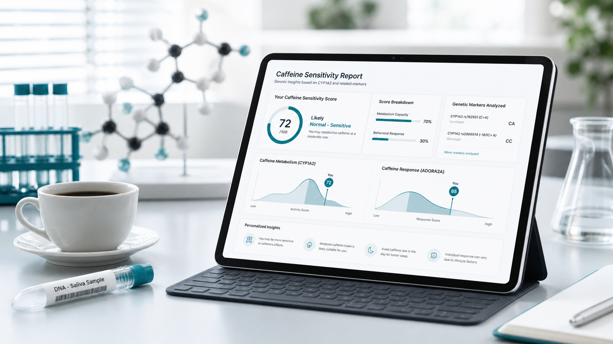

내 결과 확인
유전자형을 선택하면 민감도 지수와 결과 해석을 바로 확인할 수 있습니다.

Caffeine response report
유전자형을 입력하면 카페인 민감도와 섭취 가이드를 바로 확인할 수 있습니다.
Service
유전자형 입력부터 결과 저장까지 한 번에 진행할 수 있습니다.
복잡한 유전자 정보를 이해하기 쉬운 문장으로 설명합니다.
유전자형을 선택하면 민감도 지수와 결과 해석을 바로 확인할 수 있습니다.
검진센터와 웰니스 프로그램에서 상담용 참고 자료로 활용할 수 있습니다.
설문과 실제 반응 데이터를 바탕으로 해석 기준을 꾸준히 검토합니다.
Report package
민감도 점수, 결과 해석, 섭취 가이드와 SNP별 근거를 구분해 보여드립니다.
CYP1A2 중심 대사 해석
AHR 기반 보조 해석
참조 분포와 백분위 비교
Scoring model
4개 SNP를 대사 레이어와 조절 레이어로 나눠 계산합니다.
최종 점수는 대사 70%, 조절 30% 비율로 합산하며, 연구·교육용 참고 자료로 제공합니다.
CYP1A2 기능 변이를 중심으로 카페인이 몸에 남을 가능성을 계산합니다.
AHR 및 CYP1A1-CYP1A2 관련 좌위를 보조 신호로 반영합니다.
Sample ID, 보고일과 4개 유전자형의 입력 여부를 확인합니다. ‘모름’을 선택한 항목은 결과 계산 전에 다시 입력하도록 안내합니다.
Process
리포트에 표시할 기본 정보를 입력합니다.
CYP1A2와 AHR 관련 SNP를 선택합니다.
민감도 지수와 유전자별 기여도를 확인합니다.
결과 해석과 섭취 가이드를 리포트로 저장합니다.
Evidence
이 리포트는 진단이나 처방이 아닙니다. 카페인 반응을 이해하기 위한 연구·교육·웰니스 안내용 자료입니다.
CYP1A2 변이는 카페인 대사 속도와 관련된 핵심 축으로 반영합니다.
AHR 관련 좌위는 섭취·대사 연구 근거를 바탕으로 보조 반영합니다.
설문, 증상, 대사체 데이터가 쌓이면 결과 기준을 다시 검토합니다.
Customer center
피드백이나 문의사항은 아래 메일로 보내주세요. 서비스와 자료에 관한 내용은 담당 기관에서 안내해 드립니다.
FAQ
상단과 첫 화면의 리포트 만들기 버튼을 누르면 생성 페이지가 열립니다.
아니요. 현재 모델은 연구·교육·웰니스 안내용이며 의료적 판단을 대체하지 않습니다.
Start report